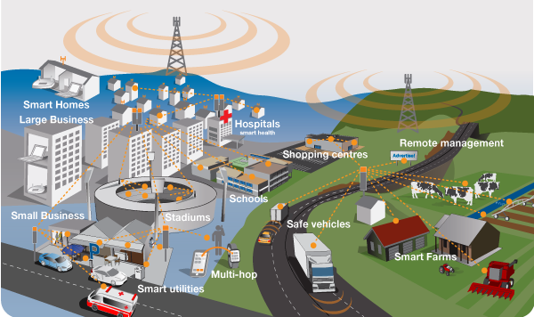

What is Radiation?
Learn the facts of what radiation actually is and whether or not it is truely dangerous.
Learn moreBefore exploring the misinformation, learn what 5G actually is and why it matters.
5G is the newest generation of cellular network technology. Its primary purpose is data transmission over a network, with each generation having:
You may have seen the 5G symbol on your mobile phone before. This means your phone is connected to a nearby 5G base station and is using 5G radio waves to transmit and receive data. This could be for activities such as video streaming or web browsing.
As the number of devices connected to the internet and the demand for data sharing increases, 5G is ever more important. With the recent advancements in the use of artificial intelligence, which rely on internet access, as well as the exponential growth of global data usage, the fast speeds and high capacities of 5G are vital for maintaining systems.
Some new technologies, such as remote surgeries, home security, and autonomous vehicles use 5G. The lower lag time (latency) it provides compared to previous generations is crucial in these circumstances to ensure safety.
5G works by using radio frequencies ranging from 20 kHz to tens of GHz. The geographical map is split into different cells, each with a 5G base station (or 5G cellular tower). A 5G wireless device in that cell connects to the base station using radio waves, as described by the image below.

This base station can then route data across the internet or to other devices.
5G uses many of the same radio frequencies as 3G and 4G technologies. However, it uses smaller, lower power transmitters than 4G so that they can be placed easily in many areas. This improves the speed, capacity, and delay of a network.
Frequencies used by 5G
5G generally uses frequencies from 20 kHz to tens of GHz. Some studies state that 5G uses frequencies up to 300 GHz, however this is the theoretical upper bound, used as a safety limit for future research. 300 GHz represents the upper bound of the radiofrequency category and is simply used as a limit to divide the difference between electromagnetic waves. In reality, the maximum frequencies 5G uses is no greater than in the 10s of GHz at their peak. These are what's known as millimetre waves used for very high-speed transmissions over very short distances.
All frequencies used by 5G are in the
Lets analyse and break down the facts from the fiction in some of these headlines and posts about radiation.
Learn the facts of what radiation actually is and whether or not it is truely dangerous.
Learn moreInvestigate some of the main misconceptions promoted on social media and otherwise.
Learn moreFind out about how the spread of fake news surrounding 5G has impacted politics and public opinions globally.
Learn more